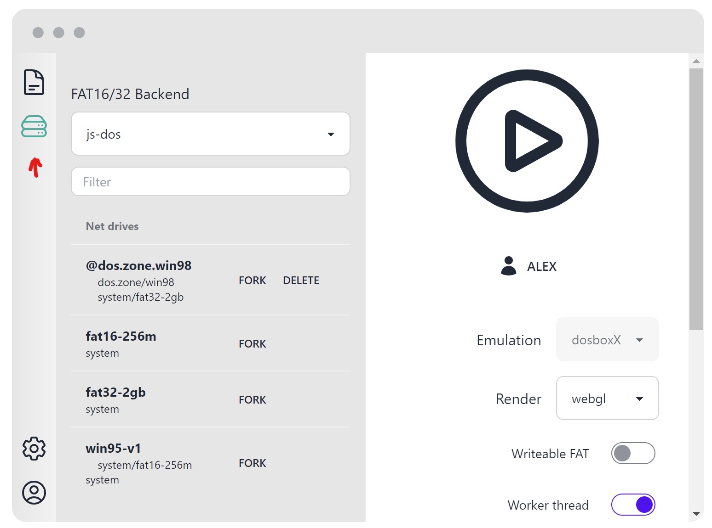
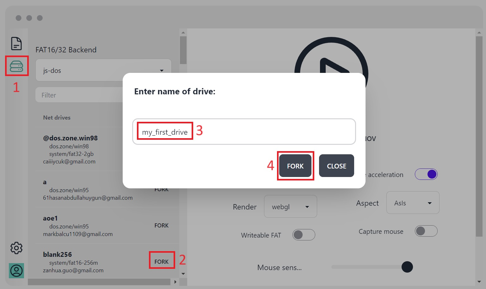
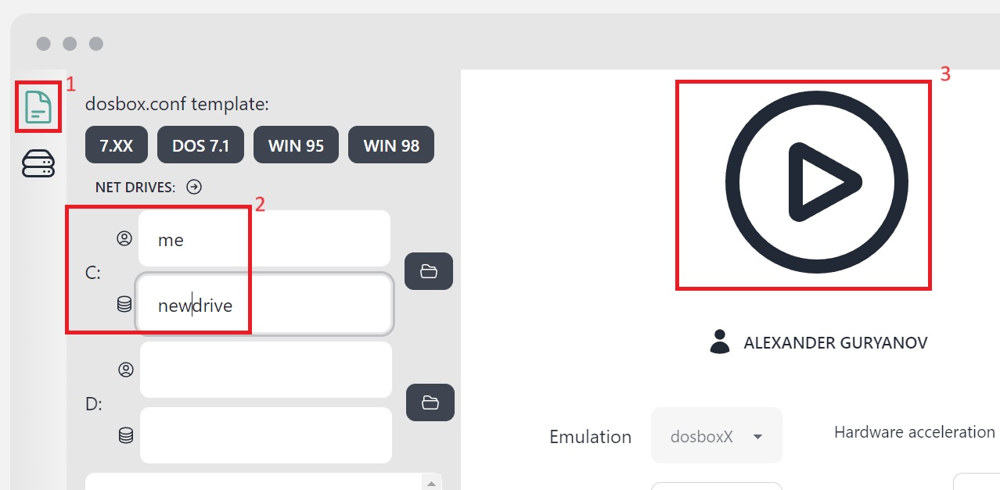
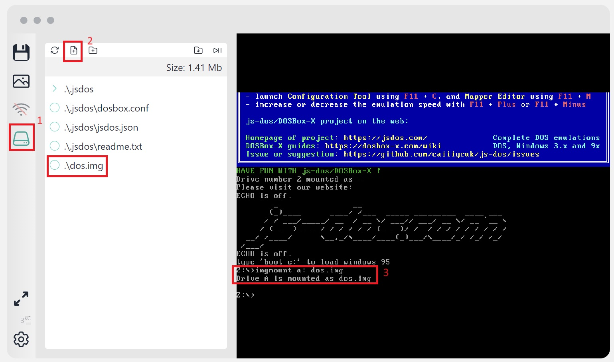
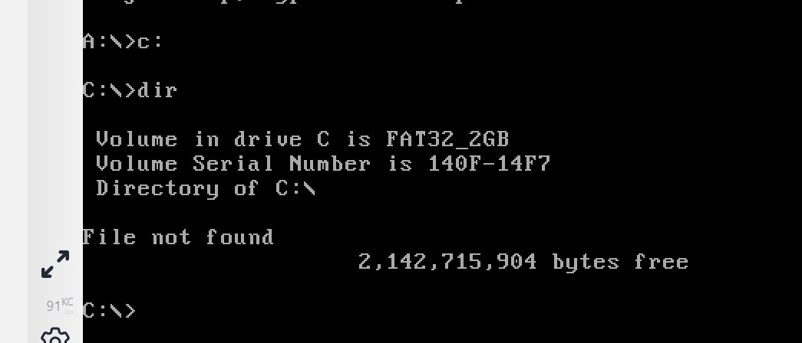

sockdrive acts as a repository of disks, allowing you to choose any available disk and make a copy of it. However, to do this, you need to be registered on the js-dos platform and have a subscription.
After successful authentication, you will see a list of all your disks.

How to Fork
You are able to fork any drive that in visible list. The list contains your drives as well as system drives.
Open drives sidebar
Press Fork button
Enter the drive name (rember it)
Press Fork button

Delete drive
Press the corresponding Delete button.
How to boot with empty drive
Empty drives are just formatted drives without any data. It's a good choice if you want to start with blank image. But because they are empty, you can't boot from it. You need to install some OS to boot from empty drive.
To do this, you need first boot with newly created drive. The easiest way to do it is to download DOS bootable diskette. You can get one here (dos.img).
Open studio, pick your forked drive as C: and press Play
Open FS sidebar, press upload file select dos.img from. 
Type imgmount a: dos.img to mount image as drive A:
Now boot from A: by typing boot a:
When you booted, you can change to drive C:. Do what you want: copy files, install OS, etc. 